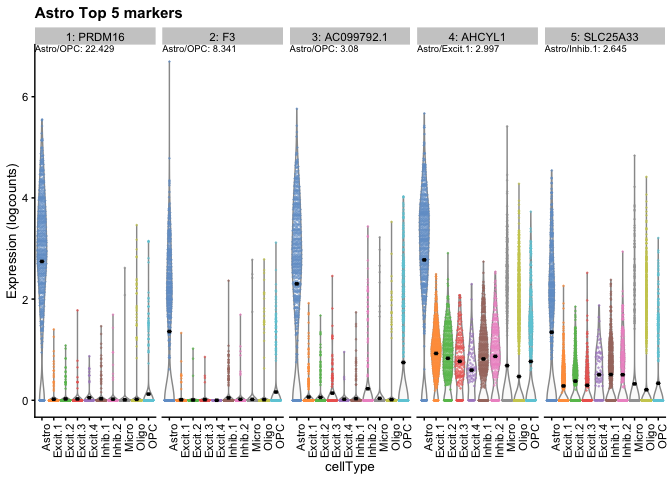

The goal of DeconvoBuddies is to provide helper functions for the deconvolution process
Installation instructions
Get the latest stable R release from CRAN. Then install DeconvoBuddies using from Bioconductor the following code:
if (!requireNamespace("BiocManager", quietly = TRUE)) {
install.packages("BiocManager")
}
BiocManager::install("DeconvoBuddies")And the development version from GitHub with:
BiocManager::install("lahuuki/DeconvoBuddies")Example
#>
#> Attaching package: 'dplyr'
#> The following objects are masked from 'package:stats':
#>
#> filter, lag
#> The following objects are masked from 'package:base':
#>
#> intersect, setdiff, setequal, unionGet mean ratios for each gene x cell type
ratios <- get_mean_ratio2(sce.test)
fc <- findMarkers_1vAll(sce.test)
(marker_stats <- left_join(ratios, fc, by = c("gene", "cellType.target")))
#> # A tibble: 2,504 x 15
#> gene cellType.target mean.target cellType mean ratio rank_ratio Symbol
#> <chr> <fct> <dbl> <fct> <dbl> <dbl> <int> <chr>
#> 1 ENSG00000… Oligo 5.98 Astro 1.29 4.62 1 RNF220
#> 2 ENSG00000… Oligo 2.19 OPC 0.737 2.98 2 CLIC4
#> 3 ENSG00000… Oligo 2.73 Micro 1.35 2.02 3 ATG4C
#> 4 ENSG00000… Oligo 3.36 Excit.3 1.70 1.98 4 SORT1
#> 5 ENSG00000… Oligo 2.83 Excit.4 1.50 1.88 5 SLC22…
#> 6 ENSG00000… Oligo 5.16 Excit.1 2.90 1.78 6 TTLL7
#> 7 ENSG00000… Oligo 3.68 OPC 2.26 1.63 7 PTBP2
#> 8 ENSG00000… Oligo 1.52 Astro 0.944 1.61 8 PADI2
#> 9 ENSG00000… Oligo 1.57 Micro 1.01 1.55 9 SRRM1
#> 10 ENSG00000… Oligo 4.11 Excit.2 2.67 1.54 10 DNAJC6
#> # … with 2,494 more rows, and 7 more variables: anno_ratio <chr>, logFC <dbl>,
#> # log.p.value <dbl>, log.FDR <dbl>, std.logFC <dbl>, rank_marker <int>,
#> # anno_logFC <chr>Extablish Color Scheme
cell_types <- levels(sce.test$cellType)
cell_colors <- create_cell_colors(cell_types = cell_types, pallet = "classic", split = "\\.", preview = TRUE)
#> Scale for 'colour' is already present. Adding another scale for 'colour',
#> which will replace the existing scale.
Citation
Below is the citation output from using citation('DeconvoBuddies') in R. Please run this yourself to check for any updates on how to cite DeconvoBuddies.
print(citation('DeconvoBuddies'), bibtex = TRUE)
#>
#> To cite package 'DeconvoBuddies' in publications use:
#>
#> Lousie Huuki (2021). DeconvoBuddies: Helper Functions for LIBD
#> Deconvolution. R package version 0.99.0.
#> https://github.com/lahuuki/DeconvoBuddies
#>
#> A BibTeX entry for LaTeX users is
#>
#> @Manual{,
#> title = {DeconvoBuddies: Helper Functions for LIBD Deconvolution},
#> author = {Lousie Huuki},
#> year = {2021},
#> note = {R package version 0.99.0},
#> url = {https://github.com/lahuuki/DeconvoBuddies},
#> }Please note that the DeconvoBuddies was only made possible thanks to many other R and bioinformatics software authors, which are cited either in the vignettes and/or the paper(s) describing this package.
Code of Conduct
Please note that the DeconvoBuddies project is released with a Contributor Code of Conduct. By contributing to this project, you agree to abide by its terms.
Development tools
- Continuous code testing is possible thanks to GitHub actions through usethis, remotes, and rcmdcheck customized to use Bioconductor’s docker containers and BiocCheck.
- Code coverage assessment is possible thanks to codecov and covr.
- The documentation website is automatically updated thanks to pkgdown.
- The code is styled automatically thanks to styler.
- The documentation is formatted thanks to devtools and roxygen2.
For more details, check the dev directory.
This package was developed using biocthis.